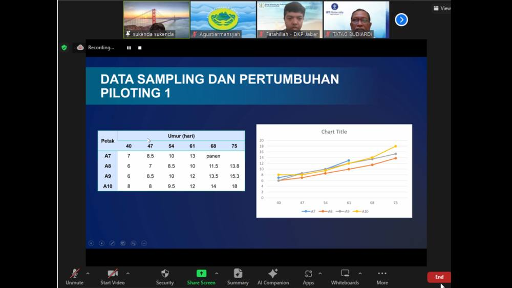

Traditional Shrimp Farming Plus Trial Yields Outperform those of Ecuador

AQUAINDONESIA, Jakarta – FUI and UNIDO have once again organized a webinar on traditional plus shrimp farming, themed “Evaluation of the Piloting SOP for Traditional Shrimp Farming Plus,” on Tuesday (17/10/2023). This webinar follows the introduction of the traditional plus SOP last April.
The traditional farming plus SOP, developed earlier this year, was then tested by Prof. Sukenda. According to him, based on data estimating the shrimp farming areas in Indonesia, intensive farms covering 6,000 hectares can produce 30 tons per hectare per year. However, traditional shrimp farms, which are much larger at around 300,000 hectares, can only produce 0.4 tons per hectare per year.
“If we can slightly increase productivity through the intensification of traditional farms into traditional plus farms—from 0.4 to 0.6 or even 0.8 tons per hectare per year—it could become a tremendous opportunity. This traditional plus SOP covers studies on pond preparation, water preparation, seedling, water quality management, as well as harvesting and post-harvest processes, which are all adaptable for small to medium-scale farmers,” he explained.
Regarding its implementation, Prof. Sukenda conducted three piloting trials. The first used 4 ponds, the second used 6 ponds, and the third used 5 ponds. These pilot trials, conducted with several shrimp farmers in South Lampung, have already shown promising results. The SOP was practically applied in former intensive ponds, using soil-based foundations without disinfectant usage.
“Many intensive ponds are idle due to production failures in previous cycles, so we’re taking advantage of them. I believe the best way to learn about traditional or traditional farming plus is by looking at Ecuador. I found a reference from Dr. Massaut in 2019 that explains shrimp farming practices in Ecuador,” he said.
For the full article, visit the link below:
https://www.aquaindonesia.id/hasil-uji-coba-tradisional-plus-lebih-produktif-dari-ekuador/
